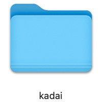
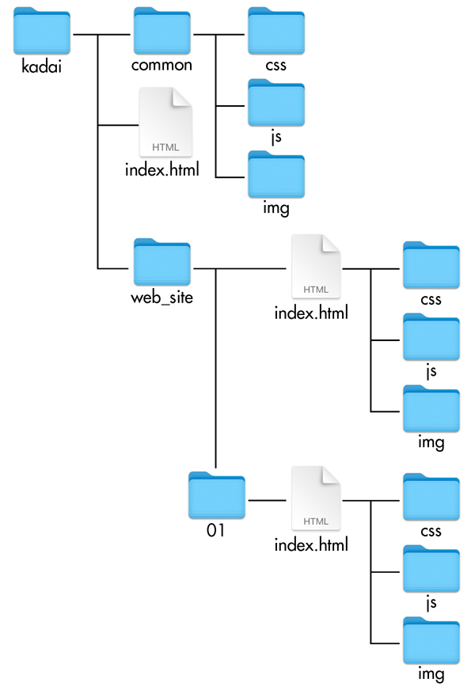
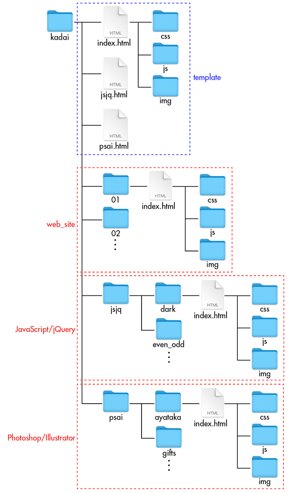

フォルダー構成
- ディレクトリー制作ルール

- フォルダー構成は、目的・制作内容によって異なります
- 上位表示が目的の場合
- 複数人で引き継ぐ場合
- 効率よく管理する場合
- それまで作っていた構成を活かしたまま管理したい（今回はこのケースです）
上位表示が目的の場合
- 複数人で引き継ぐ場合
- 効率よく管理する場合
も同様に、フォルダー内のHTMLファイル名は、必ず「index.html」にします

それまで作っていた構成を活かしたまま管理したい
- 今回は、できるだけいままで作成したフォルダーを活かしていきたい
- 「robots.txt」は、割愛していますが「index.html（ルート階層）」と同一階層に置いておきます
